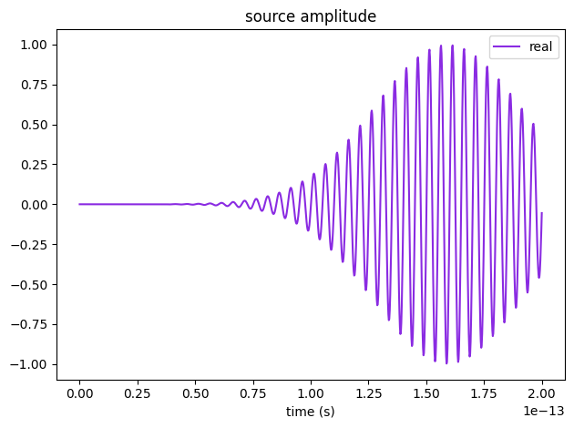
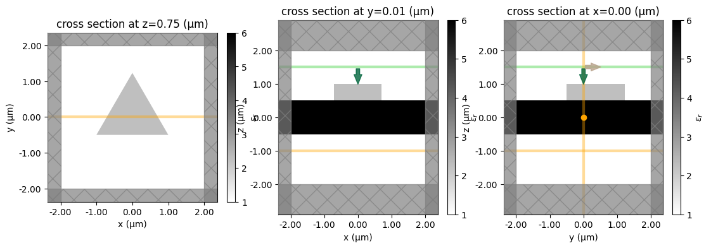
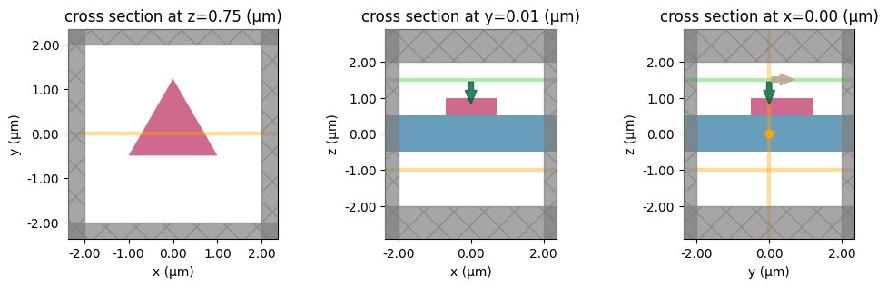
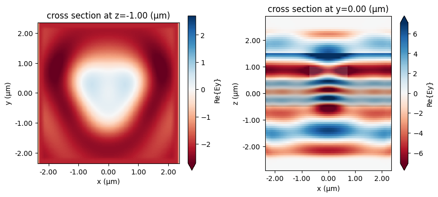
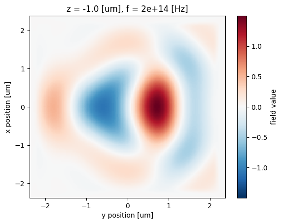
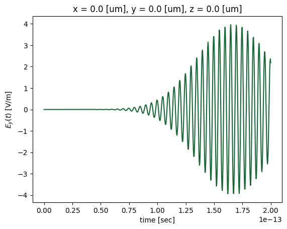
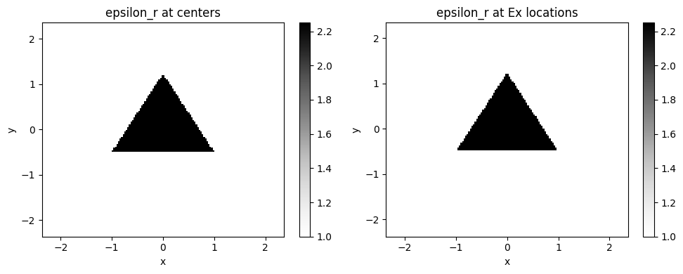

# standard python imports
import h5py
import matplotlib.pyplot as plt
import numpy as np
# tidy3d imports
import tidy3d as td
from tidy3d import webTidy3D first walkthrough
Our first tutorial focuses on illustrating the basic setup, run, and analysis of a Tidy3D simulation. In this example, we will simulate a plane wave impinging on dielectric slab with a triangular pillar made of a lossy dielectric sitting on top. First, we import everything needed.
We begin by initializing general simulation parameters. To streamline the setup and management of frequency-related values, we use the convenience class FreqRange.
Note that the perfectly matched layer (PML) regions extend outside the user-defined simulation domain. As a result, the total computational domain is larger than the specified simulation region—unlike in some solvers where the PML occupies a portion of the domain itself.
# Simulation domain size (in micron)
sim_size = [4, 4, 4]
# Central frequency and bandwidth of pulsed excitation, in Hz
freq0 = 2e14
fwidth = 1e13
# set frequency range
freq_range = td.FreqRange(freq0=freq0, fwidth=fwidth)
# apply a PML in all directions
boundary_spec = td.BoundarySpec.all_sides(boundary=td.PML())The run time of a simulation depends a lot on whether there are any long-lived resonances. In our example here, there is no strong resonance. Thus, we do not need to run the simulation much longer than after the sources have decayed. We thus set the run time based on the source bandwidth.
# Total time to run in seconds
run_time = 2 / fwidthStructures and materials
Next, we initialize the simulated structure. The structure consists of two Structure objects. Each object consists of a Geometry and a Medium to define the spatial extent and material properties, respectively. Note that the size of any object (structure, source, or monitor) can extend beyond the simulation domain, and is truncated at the edges of that domain.
Note: For best results, structures that intersect with the PML or simulation edges should extend extend all the way through. In many such cases, an “infinite” size td.inf can be used to define the size along that dimension.
# Lossless dielectric specified directly using relative permittivity
material1 = td.Medium(permittivity=6.0)
# Lossy dielectric defined from the real and imaginary part of the refractive index
material2 = td.Medium.from_nk(n=1.5, k=0.0, freq=freq_range.freq0)
# material2 = td.Medium(permittivity=2.)
# Rectangular slab, extending infinitely in x and y with medium `material1`
box = td.Structure(geometry=td.Box(center=[0, 0, 0], size=[td.inf, td.inf, 1]), medium=material1)
# Triangle in the xy-plane with a finite extent in z
equi_tri_verts = [[-1 / 2, -1 / 4], [1 / 2, -1 / 4], [0, np.sqrt(3) / 2 - 1 / 4]]
poly = td.Structure(
geometry=td.PolySlab(
vertices=(2 * np.array(equi_tri_verts)).tolist(),
# vertices=equi_tri_verts,
slab_bounds=(0.5, 1.0),
axis=2,
),
medium=material2,
)Sources
Next, we define a source injecting a normal-incidence plane-wave from above. The time dependence of the source is a Gaussian pulse. A source can be added to multiple simulations. After we add the source to a specific simulation, such that the total run time is known, we can use in-built plotting tools to visualize its time- and frequency-dependence, which we will show below.
psource = td.PlaneWave(
center=(0, 0, 1.5),
direction="-",
size=(td.inf, td.inf, 0),
source_time=freq_range.to_gaussian_pulse(),
pol_angle=np.pi / 2,
)Monitors
Finally, we can also add some monitors that will record the fields that we request during the simulation run.
The two monitor types for measuring fields are FieldMonitor and FieldTimeMonitor, which record the frequency-domain and time-domain fields, respectively.
FieldMonitor objects operate by running a discrete Fourier transform of the fields at a given set of frequencies to perform the calculation “in-place” with the time stepping. FieldMonitor objects are useful for investigating the steady-state field distribution in 2D or even 3D regions of the simulation.
FieldTimeMonitor objects are best used to monitor the time dependence of the fields at a single point, but they can also be used to create “animations” of the field pattern evolution. Because spatially large FieldMonitor objects can lead to a very large amount of data that needs to be stored, an optional start and stop time can be supplied, as well as an interval specifying the amount of time steps between each measurement (default of 1).
# measure time domain fields at center location, measure every 5 time steps
time_mnt = td.FieldTimeMonitor(center=[0, 0, 0], size=[0, 0, 0], interval=5, name="field_time")
# measure the steady state fields at central frequency in the xy plane and the xz plane.
freq_mnt1 = td.FieldMonitor(
center=[0, 0, -1], size=[20, 20, 0], freqs=freq_range.freqs(num_points=1), name="field1"
)
freq_mnt2 = td.FieldMonitor(
center=[0, 0, 0], size=[20, 0, 20], freqs=freq_range.freqs(num_points=1), name="field2"
)Simulation
Now we can initialize the Simulation with all the elements defined above. A nonuniform simulation grid is generated automatically based on a given minimum number of cells per wavelength in each material (10 by default), using the frequencies defined in the source.
Tidy3D uses a hybrid floating-point precision by default as it is practically sufficient in almost all cases, double precision should only be explored in large simulations when very high accuracy is desired. Even then, it might not have a noticeable effect over other sources of numerical error like the finite grid. As this is a small example with a minimal cost, we will simply demonstrate you can leverage this option depending on your simulation goals.
# Initialize simulation
sim = td.Simulation(
size=sim_size,
grid_spec=td.GridSpec.auto(min_steps_per_wvl=20),
structures=[box, poly],
sources=[psource],
monitors=[time_mnt, freq_mnt1, freq_mnt2],
run_time=run_time,
boundary_spec=boundary_spec,
precision="double",
)We can check the simulation monitors just to make sure everything looks right.
for m in sim.monitors:
m.help()╭────────────────── <class 'tidy3d.components.monitor.FieldTimeMonitor'> ──────────────────╮ │ :class:`Monitor` that records electromagnetic fields in the time domain. │ │ │ │ ╭──────────────────────────────────────────────────────────────────────────────────────╮ │ │ │ FieldTimeMonitor( │ │ │ │ │ attrs={}, │ │ │ │ │ type='FieldTimeMonitor', │ │ │ │ │ center=(0.0, 0.0, 0.0), │ │ │ │ │ size=(0.0, 0.0, 0.0), │ │ │ │ │ name='field_time', │ │ │ │ │ interval_space=(1, 1, 1), │ │ │ │ │ colocate=True, │ │ │ │ │ start=0.0, │ │ │ │ │ stop=None, │ │ │ │ │ interval=5, │ │ │ │ │ fields=('Ex', 'Ey', 'Ez', 'Hx', 'Hy', 'Hz') │ │ │ │ ) │ │ │ ╰──────────────────────────────────────────────────────────────────────────────────────╯ │ │ │ │ attrs = {} │ │ bounding_box = Box(attrs={}, type='Box', center=(0.0, 0.0, 0.0), size=(0.0, 0.0, 0.0)) │ │ bounds = ((0.0, 0.0, 0.0), (0.0, 0.0, 0.0)) │ │ center = (0.0, 0.0, 0.0) │ │ colocate = True │ │ fields = ('Ex', 'Ey', 'Ez', 'Hx', 'Hy', 'Hz') │ │ geometry = Box(attrs={}, type='Box', center=(0.0, 0.0, 0.0), size=(0.0, 0.0, 0.0)) │ │ interval = 5 │ │ interval_space = (1, 1, 1) │ │ name = 'field_time' │ │ plot_params = PlotParams( │ │ attrs={}, │ │ alpha=0.4, │ │ zorder=None, │ │ type='PlotParams', │ │ edgecolor='orange', │ │ facecolor='orange', │ │ fill=True, │ │ hatch=None, │ │ linewidth=3.0 │ │ ) │ │ size = (0.0, 0.0, 0.0) │ │ start = 0.0 │ │ stop = None │ │ type = 'FieldTimeMonitor' │ │ zero_dims = [0, 1, 2] │ ╰──────────────────────────────────────────────────────────────────────────────────────────╯
╭──────────────────────────── <class 'tidy3d.components.monitor.FieldMonitor'> ────────────────────────────╮ │ :class:`Monitor` that records electromagnetic fields in the frequency domain. │ │ │ │ ╭──────────────────────────────────────────────────────────────────────────────────────────────────────╮ │ │ │ FieldMonitor( │ │ │ │ │ attrs={}, │ │ │ │ │ type='FieldMonitor', │ │ │ │ │ center=(0.0, 0.0, -1.0), │ │ │ │ │ size=(20.0, 20.0, 0.0), │ │ │ │ │ name='field1', │ │ │ │ │ interval_space=(1, 1, 1), │ │ │ │ │ colocate=True, │ │ │ │ │ freqs=array([2.e+14]), │ │ │ │ │ apodization=ApodizationSpec( │ │ │ │ │ │ attrs={}, │ │ │ │ │ │ start=None, │ │ │ │ │ │ end=None, │ │ │ │ │ │ width=None, │ │ │ │ │ │ type='ApodizationSpec' │ │ │ │ │ ), │ │ │ │ │ fields=('Ex', 'Ey', 'Ez', 'Hx', 'Hy', 'Hz') │ │ │ │ ) │ │ │ ╰──────────────────────────────────────────────────────────────────────────────────────────────────────╯ │ │ │ │ apodization = ApodizationSpec(attrs={}, start=None, end=None, width=None, type='ApodizationSpec') │ │ attrs = {} │ │ bounding_box = Box(attrs={}, type='Box', center=(0.0, 0.0, -1.0), size=(20.0, 20.0, 0.0)) │ │ bounds = ((-10.0, -10.0, -1.0), (10.0, 10.0, -1.0)) │ │ center = (0.0, 0.0, -1.0) │ │ colocate = True │ │ fields = ('Ex', 'Ey', 'Ez', 'Hx', 'Hy', 'Hz') │ │ freqs = array([2.e+14]) │ │ frequency_range = (np.float64(200000000000000.0), np.float64(200000000000000.0)) │ │ geometry = Box(attrs={}, type='Box', center=(0.0, 0.0, -1.0), size=(20.0, 20.0, 0.0)) │ │ interval_space = (1, 1, 1) │ │ name = 'field1' │ │ plot_params = PlotParams( │ │ attrs={}, │ │ alpha=0.4, │ │ zorder=None, │ │ type='PlotParams', │ │ edgecolor='orange', │ │ facecolor='orange', │ │ fill=True, │ │ hatch=None, │ │ linewidth=3.0 │ │ ) │ │ size = (20.0, 20.0, 0.0) │ │ type = 'FieldMonitor' │ │ zero_dims = [2] │ ╰──────────────────────────────────────────────────────────────────────────────────────────────────────────╯
╭──────────────────────────── <class 'tidy3d.components.monitor.FieldMonitor'> ────────────────────────────╮ │ :class:`Monitor` that records electromagnetic fields in the frequency domain. │ │ │ │ ╭──────────────────────────────────────────────────────────────────────────────────────────────────────╮ │ │ │ FieldMonitor( │ │ │ │ │ attrs={}, │ │ │ │ │ type='FieldMonitor', │ │ │ │ │ center=(0.0, 0.0, 0.0), │ │ │ │ │ size=(20.0, 0.0, 20.0), │ │ │ │ │ name='field2', │ │ │ │ │ interval_space=(1, 1, 1), │ │ │ │ │ colocate=True, │ │ │ │ │ freqs=array([2.e+14]), │ │ │ │ │ apodization=ApodizationSpec( │ │ │ │ │ │ attrs={}, │ │ │ │ │ │ start=None, │ │ │ │ │ │ end=None, │ │ │ │ │ │ width=None, │ │ │ │ │ │ type='ApodizationSpec' │ │ │ │ │ ), │ │ │ │ │ fields=('Ex', 'Ey', 'Ez', 'Hx', 'Hy', 'Hz') │ │ │ │ ) │ │ │ ╰──────────────────────────────────────────────────────────────────────────────────────────────────────╯ │ │ │ │ apodization = ApodizationSpec(attrs={}, start=None, end=None, width=None, type='ApodizationSpec') │ │ attrs = {} │ │ bounding_box = Box(attrs={}, type='Box', center=(0.0, 0.0, 0.0), size=(20.0, 0.0, 20.0)) │ │ bounds = ((-10.0, 0.0, -10.0), (10.0, 0.0, 10.0)) │ │ center = (0.0, 0.0, 0.0) │ │ colocate = True │ │ fields = ('Ex', 'Ey', 'Ez', 'Hx', 'Hy', 'Hz') │ │ freqs = array([2.e+14]) │ │ frequency_range = (np.float64(200000000000000.0), np.float64(200000000000000.0)) │ │ geometry = Box(attrs={}, type='Box', center=(0.0, 0.0, 0.0), size=(20.0, 0.0, 20.0)) │ │ interval_space = (1, 1, 1) │ │ name = 'field2' │ │ plot_params = PlotParams( │ │ attrs={}, │ │ alpha=0.4, │ │ zorder=None, │ │ type='PlotParams', │ │ edgecolor='orange', │ │ facecolor='orange', │ │ fill=True, │ │ hatch=None, │ │ linewidth=3.0 │ │ ) │ │ size = (20.0, 0.0, 20.0) │ │ type = 'FieldMonitor' │ │ zero_dims = [1] │ ╰──────────────────────────────────────────────────────────────────────────────────────────────────────────╯
Visualization functions
We can now use the some in-built plotting functions to make sure that we have set up the simulation as we desire.
First, let’s take a look at the source time dependence.
# Visualize source
psource.source_time.plot(np.linspace(0, run_time, 1001))
plt.show()
And now let’s visualize the simulation.
For this, we will plot three cross sections at z=0.75, y=0, and x=0, respectively.
The relative permittivity of objects is plotted in grayscale.
By default, sources are overlaid in green, monitors in yellow, and PML boundaries in gray.
fig, ax = plt.subplots(1, 3, figsize=(13, 4))
sim.plot_eps(z=0.75, freq=freq_range.freq0, ax=ax[0])
sim.plot_eps(y=0.01, freq=freq_range.freq0, ax=ax[1])
sim.plot_eps(x=0, freq=freq_range.freq0, ax=ax[2])
plt.show()
Alternatively, we can also plot the structures with a fake color based on the material they are made of.
fig, ax = plt.subplots(1, 3, figsize=(12, 3))
sim.plot(z=0.75, ax=ax[0])
sim.plot(y=0.01, ax=ax[1])
sim.plot(x=0, ax=ax[2])
plt.show()
Running through the web API
Now that the simulation is constructed, we can run it using the web API of Tidy3D. First, we submit the project. Note that we can give it a custom name.
task_id = web.upload(sim, task_name="Simulation")13:09:06 UTC Created task 'Simulation' with resource_id 'fdve-0f42a095-1a4d-4abc-9bc5-d7e8a5b4fafd' and task_type 'FDTD'.
View task using web UI at 'https://tidy3d.simulation.cloud/workbench?taskId=fdve-0f42a095-1a4 d-4abc-9bc5-d7e8a5b4fafd'.
Task folder: 'default'.
13:09:18 UTC Estimated FlexCredit cost: 0.025. Minimum cost depends on task execution details. Use 'web.real_cost(task_id)' to get the billed FlexCredit cost after a simulation run.
The task is still in draft status and will not run until we call the start function. Before that, we may want to check the estimated cost of the task. This is the maximum possible cost, and can be lower in case of early shutoff.
estimate_cost = web.estimate_cost(task_id)13:09:24 UTC Estimated FlexCredit cost: 0.025. Minimum cost depends on task execution details. Use 'web.real_cost(task_id)' to get the billed FlexCredit cost after a simulation run.
We can now start the task, and if we want to, continuously monitor its status and wait until the run is successful. The monitor function will keep running until either a 'success' or 'error' status is returned.
# web.start(task_id, solver_version="improve_python_overgap-0.0.0")
web.start(task_id)
web.monitor(task_id, verbose=True)13:09:27 UTC status = queued
To cancel the simulation, use 'web.abort(task_id)' or 'web.delete(task_id)' or abort/delete the task in the web UI. Terminating the Python script will not stop the job running on the cloud.
13:09:50 UTC starting up solver
running solver
13:09:56 UTC status = success
View simulation result at 'https://tidy3d.simulation.cloud/workbench?taskId=fdve-0f42a095-1a4 d-4abc-9bc5-d7e8a5b4fafd'.
We can also use the real_cost function once the task is complete to check the cost that was actually billed. It may take a few seconds before it is available.
import time
time.sleep(4)
real_cost = web.real_cost(task_id)13:10:01 UTC Billed flex credit cost: 0.025.
Note: the task cost pro-rated due to early shutoff was below the minimum threshold, due to fast shutoff. Decreasing the simulation 'run_time' should decrease the estimated, and correspondingly the billed cost of such tasks.
Loading and analyzing data
After a successful run, we can download the results and load them into our simulation model. We use the download_results function from our web API, which downloads a single hdf5 file containing all the monitor data, a log file, and a json file defining the original simulation (same as what you’ll get if you run sim.to_json() on the current object). Optionally, you can provide a folder in which to store the files. In the example below, the results are stored in the data/ folder.
sim_data = web.load(task_id, path="data/sim_data.hdf5")
# Show the output of the log file
print(sim_data.log)13:10:08 UTC Loading simulation from data/sim_data.hdf5
13:10:09 UTC WARNING: Simulation final field decay value of 0.282 is greater than the simulation shutoff threshold of 1e-05. Consider running the simulation again with a larger 'run_time' duration for more accurate results.
WARNING: Warning messages were found in the solver log. For more information, check 'SimulationData.log' or use 'web.download_log(task_id)'.
[13:09:44] INFO: Auto meshing using wavelength 1.4999 defined from sources.
INFO: Auto meshing using wavelength 1.4999 defined from sources.
INFO: Auto meshing using wavelength 1.4999 defined from sources.
USER: Simulation domain Nx, Ny, Nz: [156, 156, 104]
USER: Applied symmetries: (0, 0, 0)
USER: Number of computational grid points: 2.6462e+06.
USER: Subpixel averaging method: SubpixelSpec(attrs={},
dielectric=PolarizedAveraging(attrs={}, type='PolarizedAveraging'),
metal=Staircasing(attrs={}, type='Staircasing'),
pec=PECConformal(attrs={}, type='PECConformal',
timestep_reduction=0.3, edge_singularity_correction=True),
pmc=Staircasing(attrs={}, type='Staircasing'),
lossy_metal=SurfaceImpedance(attrs={}, type='SurfaceImpedance',
timestep_reduction=0.0, edge_singularity_correction=True),
type='SubpixelSpec')
USER: Number of time steps: 3.4930e+03
USER: Automatic shutoff factor: 1.00e-05
USER: Time step (s): 5.7275e-17
USER:
[13:09:45] USER: Compute source modes time (s): 0.3307
WARNING: Provided source time dependence appears not to fully decay
by the chosen run time, broadband source set up may not be accurate.
You may need to increase simulation run time.
WARNING: Provided source time dependence appears not to fully decay
by the chosen run time, broadband source set up may not be accurate.
You may need to increase simulation run time.
USER: Rest of setup time (s): 0.4530
[13:09:48] USER: Compute monitor modes time (s): 0.0002
[13:09:53] USER: Solver time (s): 5.2400
USER: Time-stepping speed (cells/s): 2.06e+09
USER: Post-processing time (s): 0.4005
====== SOLVER LOG ======
Processing grid and structures...
Building FDTD update coefficients...
Solver setup time (s): 0.7297
Running solver for 3493 time steps...
- Time step 139 / time 7.96e-15s ( 4 % done), field decay: 1.00e+00
- Time step 279 / time 1.60e-14s ( 8 % done), field decay: 1.00e+00
- Time step 419 / time 2.40e-14s ( 12 % done), field decay: 1.00e+00
- Time step 558 / time 3.20e-14s ( 16 % done), field decay: 1.00e+00
- Time step 698 / time 4.00e-14s ( 20 % done), field decay: 1.00e+00
- Time step 838 / time 4.80e-14s ( 24 % done), field decay: 1.00e+00
- Time step 978 / time 5.60e-14s ( 28 % done), field decay: 1.00e+00
- Time step 1117 / time 6.40e-14s ( 32 % done), field decay: 1.00e+00
- Time step 1257 / time 7.20e-14s ( 36 % done), field decay: 1.00e+00
- Time step 1397 / time 8.00e-14s ( 40 % done), field decay: 1.00e+00
- Time step 1536 / time 8.80e-14s ( 44 % done), field decay: 1.00e+00
- Time step 1676 / time 9.60e-14s ( 48 % done), field decay: 1.00e+00
- Time step 1816 / time 1.04e-13s ( 52 % done), field decay: 1.00e+00
- Time step 1956 / time 1.12e-13s ( 56 % done), field decay: 1.00e+00
- Time step 2095 / time 1.20e-13s ( 60 % done), field decay: 1.00e+00
- Time step 2235 / time 1.28e-13s ( 64 % done), field decay: 1.00e+00
- Time step 2375 / time 1.36e-13s ( 68 % done), field decay: 1.00e+00
- Time step 2514 / time 1.44e-13s ( 72 % done), field decay: 1.00e+00
- Time step 2654 / time 1.52e-13s ( 76 % done), field decay: 8.45e-01
- Time step 2780 / time 1.59e-13s ( 79 % done), field decay: 1.00e+00
- Time step 2794 / time 1.60e-13s ( 80 % done), field decay: 1.00e+00
- Time step 2934 / time 1.68e-13s ( 84 % done), field decay: 1.00e+00
- Time step 3073 / time 1.76e-13s ( 88 % done), field decay: 9.61e-01
- Time step 3213 / time 1.84e-13s ( 92 % done), field decay: 5.51e-01
- Time step 3353 / time 1.92e-13s ( 96 % done), field decay: 3.05e-01
- Time step 3492 / time 2.00e-13s (100 % done), field decay: 2.82e-01
Time-stepping time (s): 4.4849
Data write time (s): 0.0245
Visualization functions
Finally, we can now use the in-built visualization tools to examine the results. Below, we plot the y-component of the field recorded by the two frequency monitors (this is the dominant component since the source is y-polarized).
fig, ax = plt.subplots(1, 2, figsize=(10, 4))
sim_data.plot_field("field1", "Ey", z=-1.0, ax=ax[0], val="real")
sim_data.plot_field("field2", "Ey", ax=ax[1], val="real")
plt.show()
Monitor data
The raw field data can be accessed through indexing by monitor name directly.
For plenty of discussion on accessing and manipulating data, refer to the data visualization tutorial.
mon1_data = sim_data["field1"]
mon1_data.Ex<xarray.ScalarFieldDataArray (x: 157, y: 157, z: 1, f: 1)> Size: 394kB
array([[[[ 0.00000000e+00-0.00000000e+00j]],
[[ 4.48280123e-07+1.32060054e-07j]],
[[ 3.28919623e-06+9.01827817e-07j]],
...,
[[ 5.53251367e-07-2.70431293e-09j]],
[[ 3.61339662e-08-4.11815663e-09j]],
[[ 0.00000000e+00-0.00000000e+00j]]],
[[[ 0.00000000e+00-0.00000000e+00j]],
[[ 2.01087507e-06+5.66765948e-07j]],
[[ 1.47048478e-05+6.04466695e-06j]],
...
[[-2.79299891e-07+2.49393951e-08j]],
[[-1.78385561e-08+3.46144317e-09j]],
[[ 0.00000000e+00-0.00000000e+00j]]],
[[[ 0.00000000e+00-0.00000000e+00j]],
[[-2.99871924e-08-2.24670746e-09j]],
[[-2.08066365e-07+1.14916445e-08j]],
...,
[[-3.09183733e-08+8.88291692e-09j]],
[[-2.33044080e-09+5.34447572e-10j]],
[[ 0.00000000e+00-0.00000000e+00j]]]], shape=(157, 157, 1, 1))
Coordinates:
* x (x) float64 1kB -2.364 -2.333 -2.303 -2.273 ... 2.303 2.333 2.364
* y (y) float64 1kB -2.367 -2.337 -2.306 -2.276 ... 2.295 2.325 2.354
* z (z) float64 8B -1.0
* f (f) float64 8B 2e+14
Attributes:
long_name: field valueax = mon1_data.Ez.real.plot()
We can use this raw data for example to also plot the time-domain fields recorded in the FieldTimeMonitor, which look largely like a delayed version of the source input, indicating that no resonant features were excited.
time_data = sim_data["field_time"]
fig, ax = plt.subplots(1)
time_data.Ey.plot()
ax.set_ylabel("$E_y(t)$ [V/m]")
plt.show()
Permittivity data
We can also query the relative permittivity in the simulation within a volume parameterized by a td.Box. The method Simulation.epsilon(box, coord_key) returns the permittivity within the specified volume.
The coord_key specifies at what locations in the yee cell to evaluate the permittivity at (eg. 'centers', 'Ey', 'Hz', etc.).
volume = td.Box(center=(0, 0, 0.75), size=(5, 5, 0))
# at Yee cell centers
eps_centers = sim.epsilon(box=volume, coord_key="centers")
# at Ex locations in the yee cell
eps_Ex = sim.epsilon(box=volume, coord_key="Ex")Return an xarray DataArray containing the complex-valued permittivity values at the Yee cell centers and the “Ex” within the box.
We can then plot or post-process this data as we wish.
f, (ax1, ax2) = plt.subplots(1, 2, tight_layout=True, figsize=(10, 4))
eps_centers.real.plot(x="x", y="y", cmap="Greys", ax=ax1)
eps_Ex.real.plot(x="x", y="y", cmap="Greys", ax=ax2)
ax1.set_title("epsilon_r at centers")
ax2.set_title("epsilon_r at Ex locations")
plt.show()
For simulation examples, please visit our examples page. If you are new to the finite-difference time-domain (FDTD) method, we highly recommend going through our FDTD101 tutorials.